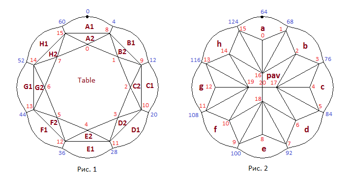

В данном разделе мы создадим модель огранки которую назовем цветок. Для данной огранки мы создадим возможность сделать рундист волнистым. Как уже говорилось ранее все огранки должны быть выпуклыми. Исключение делается только для рундиста сердца или огранок подобных рассматриваемым в данной главе. Это связано с процессом огранки необработанного камня. Перечислим последовательность действий, которые производятся при создании реальной физической огранки
Создание из заготовки для огранки цилиндра, обвод которого совпадает с желаемой линией рундиста. Рундист можно, например, прорезать лазером.
Шлифование площадки. Площадка (если рассматривать огранку или ее модель в прямоугольных координатах) должна всегда быть параллельна горизонтальной плоскости.
Огранка павильона. Все создаваемые грани павильона должны быть обязательно выпуклыми - если через любую грань провести плоскость, то все остальные грани (возможно за исключением граней рундиста указанных выше огранок) должны находиться по одну сторону от этой плоскости.
Огранка короны. В процессе создания короны сначала создаются основные четырехугольные грани. Затем происходит шлифовка верхних угловых граней короны, а затем – нижних. Все создаваемые грани короны должны быть обязательно выпуклыми.
Так как модель flower в целом является невыпуклый, то проверка многогранника на выпуклость разделена на две части. Сначала проверяется отдельно выпуклость короны, а затем отдельно проверяется выпуклость всех граней павильона. Рундист может быть невыпуклым, и поэтому он исключается из проверки.
По ссылке Flower A Cube Map можно увидеть разработанную в данной главе огранку Flower A отображенную при помощи кубических карт. Нажав на приведенной по ссылке странице кнопку Inverse можно увидеть огранку на черном фоне.
Схематичные изображения короны и павильона огранки, а также нумерация вершин показаны на рисунках 1 и 2. Рисунок 1 отображает вид огранки когда наблюдатель находится снаружи модели и смотрит на корону сверху. На рисунке 2 наблюдатель смотрит на павильон сверху как если бы он находился внутри модели.
var lw = 1.0; // отношение длины огранки к ее ширине // Рундист var r = 0.01; // толщина рундиста var waviness = 0.02; // определяет "волнистость" рундиста // Корона var hCrown = 0.193; // задает значение высоты короны var H2H = 0.7; // определяет положение границы между верхним и нижним ярусами короны var ang_1 = 35*DEGREE; // задает угол наклона граней A1 - H1 нижнего яруса короны var ang_2 = 25*DEGREE; // задает угол наклона граней A2 - H2 верхнего яруса короны // Павильон var hp = 0.47; // задает значение глубины павильона var hPavFacet = 0.88; // задает значение глубины вершин 16 - 19 павильона var ang_a_h = 50*DEGREE; // задает угол наклона граней f - h павильона var h1 = 0.12; // определяет глубину вершин 1, 3, 5, 7, 9, 11, 13, 15 павильона var h2 = 0.20; // определяет глубину вершин 0, 2, 4, 6, 8, 10, 12, 14 павильона
В главе 4 было рассмотрено построение кривой подобной рундисту данной огранки. Форма рундиста flower определяется комбинацией синусоидальных функций:
var gd = [64];
var i;
var t = 0.0;
var del = Math.PI / 4;
var m = 0.125;
var R = 0.5;
var d = 3*(Math.PI/2)/4;
// waviness задает волнистость
for(i = 0; i < 64; i++)
{
t = i * del;
gd[i] = new Point2D();
gd[i][0] = (R + m*R)*Math.cos(m*t+d) - waviness*Math.cos(t + m*t+d);
gd[i][1] = (R + m*R)*Math.sin(m*t+d) - waviness*Math.sin(t + m*t+d);
}
Очень доступно и популярно про задание замкнутых кривых функциональными рядами рассказано в книге Ю.В. Пухначева и Ю.П. Попова "Математика без формул. Книга 2". Также рекомендую книгу Е.В. Шикина и М.М. Франк-Каменецкого "Кривые на плоскости и в пространстве". Относительно недавно (в 2014 году) была переиздана в издательстве URSS, на мой взгляд, замечательная книга А.А. Савелова "Плоские кривые". На английском языке в интернете можно найти достаточно простую и хорошую книгу "A book of curves" by E.H. Lockwood.
Так как огранка обладает симметрией относительно плоскостей OXZ и OYZ то достаточно определить
положение ее вершин для одного квадранта. Начнем с короны. Она состоит из двух ярусов границу между
которыми задает значение параметра H2H. Начнем с нижнего яруса.
Сначала найдем плоскости в которых лежат грани A1, B1 и C1 и затем определим положение по оси
Z вершин рундиста лежащих на пересечении этих плоскостей с вертикальными прямыми проходящими
через соответствующие вершины рундиста. После этого определим плоскость лежащую на границе ярусов короны.
Точки пересечения этой плоскости с плоскостями граней A1, B1 и C1 определят положение
вершин короны 8 и 9.
После этого найдем плоскости в которых лежат грани A2, B2 и C2 принадлежащие второму (верхнему) ярусу короны.
Вершины короны 0 и 2 расположены на пересечении трех плоскостей. Первая - это плоскость в которой лежит площадка.
Вторая и третья плоскости для вершины 0 - это OYZ и A2, а для вершины 2 - OXZ и C2.
Для определения положения вершины 1 надем точку пересечения диагональной плоскости XY (смотри листинг далее)
с плоскостью площадки и плоскостью в которой лежит грань B2.
// Вспомогательные переменные и объекты
var Z1 = new Vector3D(0,0,1);
var Y1 = new Vector3D(0,1,0);
var X1 = new Vector3D(1,0,0);
var i;
InitGirdle();
var A1 = new Plane3D();
A1.CreateInclinePlane(ang_1, girdle[60], girdle[4], girdle[4]);
for (i = 0; i < 4; i++)
{
var line = new Line3D();
line.CreateLineVectorPoint(Z1, girdle[i]);
girdle[i] = line.IntersectionLinePlane(A1);
}
var B1 = new Plane3D();
B1.CreateInclinePlane(ang_1, girdle[4], girdle[12], girdle[12]);
for (i = 5; i < 12; i++)
{
var line = new Line3D();
line.CreateLineVectorPoint(Z1, girdle[i]);
girdle[i] = line.IntersectionLinePlane(B1);
}
var C1 = new Plane3D();
C1.CreateInclinePlane(ang_1, girdle[12], girdle[20], girdle[20]);
for (i = 13; i < 20; i++)
{
var line = new Line3D();
line.CreateLineVectorPoint(Z1, girdle[i]);
girdle[i] = line.IntersectionLinePlane(C1);
}
for(i = 0; i < 16; i++)
{
girdle[32-i][2] = girdle[i][2];
}
for(i = 0; i < 32; i++)
{
girdle[63-i][2] = girdle[i+1][2];
}
// Создаем горизонтальную плоскость прооходящую через H2H
var planeH2H = new Plane3D();
var Table = new Plane3D();
planeH2H.CreatePlaneNormalDistOXYZ(Z1, hCrown*H2H + r/2);
crown[8] = planeH2H.IntersectionThreePlanes(A1, B1);
crown[9] = planeH2H.IntersectionThreePlanes(B1, C1);
// Положение вершин короны 10, 11, 12, 13, 14 и 15 находим из соображений симметрии.
.....................................................................................
// Верхние плоскости короны
var A2 = new Plane3D();
A2.CreateInclinePlane(ang_2, crown[15], crown[8], crown[8]);
var B2 = new Plane3D();
B2.CreateInclinePlane(ang_2, crown[8], crown[9], crown[9]);
var C2 = new Plane3D();
C2.CreateInclinePlane(ang_2, crown[9], crown[10], crown[10]);
var OYZ = new Plane3D();
OYZ.CreatePlaneNormalVectorPoint(X1, new Point3D(0, 0, 0));
var OXZ = new Plane3D();
OXZ.CreatePlaneNormalVectorPoint(Y1, new Point3D(0, 0, 0));
var pt = new Point3D(crown[8][0] + (crown[9][0] - crown[8][0])/2,
crown[9][1] + (crown[8][1] - crown[9][1])/2, 0);
var XY = new Plane3D();
XY.CreatePlaneThreePoints(pt, girdle[8], girdle[8+64]);
// или
//XY.CreatePlaneThreePoints(new Point3D(0,0,0), new Point3D(0,0,1), girdle[8+64]);
var Table = new Plane3D();
Table.CreatePlaneNormalDistOXYZ(Z1, hCrown + r/2);
crown[0] = Table.IntersectionThreePlanes(A2, OYZ);
crown[1] = Table.IntersectionThreePlanes(B2, XY);
crown[2] = Table.IntersectionThreePlanes(C2, OXZ);
// Положение вершин короны 3, 4, 5, 6 и 7 находим из соображений симметрии.
...........................................................................
Найдем плоскости в которых лежат грани павильона a, b и c и затем скорректируем положение по оси
Z вершин рундиста лежащих на пересечении этих плоскостей с вертикальными прямыми проходящими
через соответствующие вершины рундиста. После этого проведем две горизонтальные плоскости чью
глубину зададут значения параметров h1 и h2. Координаты вершин павильона 1, 2, 3 и 0, 4 определят
точки пересечения соответствующих плоскостей(смотри листинг далее).
Затем нам следует найти плоскость в которой лежит грань pav. Для создания этой плоскости
расчитаем ее нормаль и затем используя эту нормаль проведем плоскость через вершину павильона 20 (калетту)
павильона. Далее проведем горизонтальную плоскость положение которой задаст параметр hPavFacet
и после этого определим координаты вершин павильона 16 и 17 - листинг далее.
pavil[20] = new Point3D(); // калетта огранки
pavil[20][0] = 0;
pavil[20][1] = 0;
pavil[20][2] = -r/2 - hp;
// Расчет плоскостей в которых лежат грани a, b и c павильона
// и корректировка глубины вершин рундиста.
var plane_a = new Plane3D();
plane_a.CreateInclinePlane(-ang_a_h, girdle[64+60], girdle[64+4], girdle[64+4]);
for (i = 0; i < 4; i++)
{
var line = new Line3D();
line.CreateLineVectorPoint(Z1, girdle[i]);
girdle[i+64] = line.IntersectionLinePlane(plane_a);
}
var plane_b = new Plane3D();
plane_b.CreateInclinePlane(-ang_a_h, girdle[64+4], girdle[64+12], girdle[64+12]);
for (i = 5; i < 12; i++)
{
var line = new Line3D();
line.CreateLineVectorPoint(Z1, girdle[i]);
girdle[i+64] = line.IntersectionLinePlane(plane_b);
}
var plane_c = new Plane3D();
plane_c.CreateInclinePlane(-ang_a_h, girdle[64+12], girdle[64+20], girdle[64+20]);
for (i = 13; i < 20; i++)
{
var line = new Line3D();
line.CreateLineVectorPoint(Z1, girdle[i]);
girdle[i+64] = line.IntersectionLinePlane(plane_c);
}
// Производим вычисление рундиста для остальных квадрантов из соображений симметрии
for(i = 0; i < 16; i++)
{
girdle[96-i][0] = girdle[i+64][0];
girdle[96-i][1] = -girdle[i+64][1];
girdle[96-i][2] = girdle[i+64][2];
}
for(i = 1; i < 32; i++)
{
girdle[128-i][0] = -girdle[i+64][0];
girdle[128-i][1] = girdle[i+64][1];
girdle[128-i][2] = girdle[i+64][2];
}
// Горизонтальная плоскость на уровне задаваемом параметром h1.
var plane_h1 = new Plane3D();
plane_h1.CreatePlaneNormalDistOXYZ(Z1, -h1 - r/2);
// Вершины 1 и 3 павильона
pavil[1] = plane_h1.IntersectionThreePlanes(plane_a, plane_b);
pavil[3] = plane_h1.IntersectionThreePlanes(plane_b, plane_c);
// Горизонтальная плоскость на уровне задаваемом параметром h2.
var plane_h2 = new Plane3D();
plane_h2.CreatePlaneNormalDistOXYZ(Z1, -h2 - r/2);
pavil[2] = plane_h2.IntersectionThreePlanes(plane_b, XY);
// Вершины 0 и 4 павильона
pavil[0] = plane_h2.IntersectionThreePlanes(plane_a, OYZ);
pavil[4] = plane_h2.IntersectionThreePlanes(plane_c, OXZ);
// Вычисляем векторное произведение vec_pav = a * b
// Оно будет являться вектором нормали vec_pav к грани pav
// Вестор a задает наклон плоскости pav к горизонту.
var a = new Vector3D(pavil[20][0] - pavil[2][0],
pavil[20][1] - pavil[2][1],
pavil[20][2] - pavil[2][2]);
a.Normer();
// Вектор b задает азимут плоскости pav.
var b = new Vector3D(girdle[76][0] - girdle[68][0], girdle[76][1] - girdle[68][1], 0)
b.Normer();
// Нормаль к плоскости pav расчитывается как векторное произведение.
var vec_pav = a.Cross(b);
vec_pav.Normer();
// Создаем плоскость pav по ее нормальному вектору и точке через которую она проходит
var pav = new Plane3D();
pav.CreatePlaneNormalVectorPoint(vec_pav, pavil[20]);
// или так
// pav.CreatePlaneVectorTwoPoints(b, pavil[2], pavil[20]);
// Но оба аргумента этой функции (pavil[2], pavil[20]) должны принадлежать создаваемой плоскости
// поэтому girdle[68] и girdle[76] аргументами функции взять нельзя и следующий вариант
// неправилен: pav.CreatePlaneVectorTwoPoints(a, girdle[68], girdle[76]);
// так как вершины рундиста 68 и 76 не принадлежат создаваемой плоскости
// Горизонтальная плоскость на уровне задаваемом параметром hPavFacet.
var plane_hPavFacet = new Plane3D();
plane_hPavFacet.CreatePlaneNormalDistOXYZ(Z1, -hPavFacet * hp - r/2);
// Вершины 16 и 17 павильона
pavil[16] = plane_hPavFacet.IntersectionThreePlanes(pav, OYZ);
pavil[17] = plane_hPavFacet.IntersectionThreePlanes(pav, OXZ);
// Вершины павильона в других квадрантах находим из соображений симметрии модели.
.................................................................................
На рисунке 3 показан внешний вид еще одной огранки с волнистым рундистом которую можно назвать
Flower B
(огранку построение которой мы рассмотрели назовем Flower A).
По ссылке Flower B Cube Map можно увидеть
огранку Flower B отображенную при помощи кубических карт.
У этой огранки Flower B корона построена также как и у огранки типа бриллиант. Хотя Flower A и
Flower B имеют достаточно красивый вид, у них есть один недостаток - большая толщина рундиста из-за
протяженных граней примыкающихк рундисту и неравномерность этой толщины. У огранки Flower A,
построение которой мы рассмотрели, такие грани есть и со стороны короны и со стороны павильона.
У огранки Flower B (показанной на рисунке 3) протяженные грани примыкают к рундисту только со стороны павильона,
но рундист около узловых своих вершин все равно остается широким. При желании у огранки Flower B есть возможность разбить
грани павильона примыкающие к рундисту на две части для того чтобы его сделать болеее равномерным по толщине и тем самым получить
возможность убрать большую толщину рундиста у его узловых вершин. У огранки Flower A также можно разделить
грани павильона примыкающие к рундисту на две части но толщину рундиста со стороны короны уменьшить не получится.